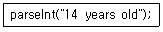

멀티미디어콘텐츠제작전문가(구) (2010-07-25 기출문제)
1과목: 멀티미디어개론
1. OSI 7계층의 기능 설명 중 틀린 것은?
- 데이터 링크계층은 물리주소를 지정한다.
- 물리계층은 물리적인 매체를 통하여 비트스트림을 전송하는데 필요한 기능을 제공하다.
- 전송계층은 전자우편의 전달과 저장을 제공한다.
- 세션계층은 대화를 구성하고 동기를 취하며, 데이터 교환을 관리한다.
(정답률: 알수없음)

2. 다음 중 인터넷 관련 기구와 그 역할을 바르게 연결한 것은?
- IANA - 새롭게 개발되는 월드 와이드 웹에 대한 표준을 제안하는 국제기구
- IRTF - 인터넷 표준안 제정 및 RFC의 실제 출판을 담당하는 국제기구
- ISOC - 인터넷의 번영과 발전을 도모하고, 인터넷의 이용과 기술에 관한 국제적인 협력을 목적으로 설립된 기구
- W3C - 인터넷 주소 등록 서비스와 주요 정보 서비스를 제공하는 국제기구
(정답률: 40%)
3. IPv6에 대한 설명으로 거리가 가장 먼 것은?
- 네트워크의 고속화와 그래픽과 비디오 등의 혼합된 미디어 전송요구에 부합되도록 설계 되었다.
- 128비트의 IP주소 크기를 가지고 있다.
- 암호화와 인증 옵션들은 패킷의 신뢰성과 무결성을 제공한다.
- 다섯 개의 클래스로 구성된 2-레벨 주소구조로 되어 있다.
(정답률: 알수없음)
4. 다음 URL의 구성 요소 중 거리가 가장 먼 것은?
- 프로토콜과 포트 번호
- 인터넷 사용자 이름과 암호
- CGI 프로그램을 위한 질의 문자열
- 서버에서 객체를 지정하는 경로와 파일 이름
(정답률: 알수없음)
5. 최대 11Mbps 속도로 동작하며, 무선 네트워크를 위한 국제 표준은?
- IEEE 802.8
- IEEE 802.9
- IEEE 802.10
- IEEE 802.11
(정답률: 알수없음)
6. RFID 기술의 기본구성이 아닌 것은?
- Tag
- Reader
- Antenna
- IPTV
(정답률: 알수없음)
7. WWL스크립트에 대한 설명으로 가장 거리가 먼 것은?
- 자바스크립트 기반의 스크립팅 언어이다.
- 임의의 사용자나 환경적인 이벤트에 대한 응답으로 호출 된다.
- 신뢰성 있는 데이터전송, 접근제어, 보안 등 3가지 기능을 담당한다.
- 효율적으로 확장 가능한 라이브러리를 지원한다.
(정답률: 알수없음)
8. 하이퍼텍스트 시스템의 구성요소인 링크의 종류로 거리가 가장 먼 것은?
- 참조링크 (Referential Link)
- 조직링크 (Organization Link)
- 키워드 링크 (Keyword Link)
- 탐색 링크 (Navigation Link)
(정답률: 알수없음)
9. 다음 중 포트스캔에 대한 설명으로 틀린 것은?
- 포트가 열려 있는 것을 확인하면 시스템의 활성화 정보도 얻을 수 있다.
- 열린 포트라 하더라도 아무 응답이 없는 경우가 있다.
- 컴퓨터에 존재하는 포트는 개다.
- TCP의 NULL 패킷으로도 포트의 활성화 여부를 알아낼 수 있다.
(정답률: 알수없음)
10. TCP/IP 프로토콜의 5RI 계층구조에 HR하지 않는 것은?
- 물리계층
- 데이터링크계층
- 세션계층
- 응용계층
(정답률: 알수없음)
11. IP주소 169.5.255.255는 어느 클래스에 속하는가?
- 호스트 IP 주소
- 직접 브로드캐스트 주소
- 제한된 브로드캐스트 주소
- 네트워크 주소
(정답률: 알수없음)
12. WPAN(Wireless Personal Area Network)을 위한 전송 기술이 아닌 것은?
- Zigbee
- Bluetooth
- UWB
- PLC
(정답률: 알수없음)
13. 다음 중 X3D의 특징과 가장 거리가 먼 것은?
- Extensible 3D의 약자이다.
- VRML을 모체로 하기 때문에 VRML의 여러 특징을 포함하고 있다.
- 외부 프로그램과 X3D 프로그램간의 상호작용을 위하여 SAI를 지원하고 있다.
- HTML을 기반으로 웹상에서 3차원 물체를 모델링 한다.
(정답률: 알수없음)
14. 멀티미디어의 데이터 구성 요소 중 텍스트의 표현방식에 따른 분류에 속하지 않는 것은?
- ASCll
- 마크업 텍스트
- 패턴 매칭
- 구조적 텍스트
(정답률: 알수없음)
15. 다음 중 방화벽의 장점에 대한 설명으로 가장 거리가 먼 것은?
- 보안 관리가 분산된다.
- 호스트 시스템에 대한 액세스를 제어한다.
- 위협에 취약한 서비스에 대한 보호를 제공한다.
- 네트워크 사용에 대한 로깅과 통계자료를 제공 한다.
(정답률: 알수없음)
16. 전송계층의 프로토콜인 UDP에 대한 설명중 거리가 가장 먼 것은?
- 비연결형 서비스를 제공한다.
- 극히 제한된 오류 점검 기능만을 수행한다.
- UDP는 매우 간단하고 신뢰성이 없는 전송 프로토콜이다.
- 흐름제어 기능을 제공하여 수신데이터는 송신순서와 동일하다.
(정답률: 알수없음)
17. 다음 중 VRML의 센서노드를 설명하고 있는 것은?
- 물체에 색을 입히거나 질감을 표현한다.
- 물체의 표면에 텍스쳐라 불리는 2차원 이미지를 감싸는 데 쓰인다.
- 사용자가 물체를 만지거나 어떠한 영역을 통과할 때 특정한 시간에 근거하여 작동하는 기능을 가지고 있다.
- 무대 위의 조명과 같은 효과를 나타낼 때 사용한다.
(정답률: 알수없음)
18. 홈 네트워킹에서 사용되는 홈 게이트웨이 기술이 아닌 것은?
- HAVI
- UPnP
- Jini
- SNMP
(정답률: 알수없음)
19. 픽셀에 대한 설명으로 틀린 것은?
- 픽셀이 많을수록 해상도가 높아진다.
- Picture Element의 약자이다.
- 화면상의 그림을 구성하는 점들 중에 하나이다.
- 이미지는 픽셀 단위로 저장되는 벡터 방식으로 기억장치에 저장된다.
(정답률: 알수없음)
20. 래스터 그래픽에 대한 설명으로 틀린 것은?
- 확대, 축소할 때 화질의 변화가 없다.
- 픽셀단위로 이미지를 저장한다.
- 비트맵 방식이라고도 한다.
- GIF, PNG, JPEG 등이 있다.
(정답률: 알수없음)
21. 방송국 등의 정보 제공처에서 사용자의 요구를 미리 파악하고 있다가 해당되는 정보를 넣어 주는 기술은?
- 스트리밍
- 푸시
- 쿠키
- 다중화
(정답률: 알수없음)
22. UNIX환경에서 사용하는 대표적인 문서 편집기는?
- tar
- vi
- cc
- line
(정답률: 알수없음)
23. 다음 중 디지털서명이 유효하기 위하여 만족시켜야 하는 요구 사항이 아닌 것은?
- 위조불가
- 접근제어
- 변경불가
- 사용자인증
(정답률: 알수없음)
24. “회원님의 신용카드와 계좌 정보에 문제가 발생하여 수정이 필요하다고 이메일 등을 통하여 속인 뒤, 금융기관을 모방한 웹사이트로 유인하여 개인정보를 빼냄”과 같은 보안 사고를 지칭하는 용어는?
- 피싱
- 스니핑
- 스파이웨어
- 백도어
(정답률: 알수없음)
25. 보안 정책(정보보호 정책)을 설명한 내용 중 거리가 가장 먼 것은?
- 정보가산에 영향을 줄 수 있는 불확실한 사건들을 식별, 통제 또는 최소화하기 위한 것을 문서로 기술해 놓은 것이다.
- 조직에서 정보자산을 안전하게 보호하고 효율적으로 사용하기 위해서 우선적으로 수립되어야 한다.
- 환경의 변화나 새로운 위협이 발생하였을 경우 또는 주기적인 위험분석을 통해 갱신된다.
- 새롭게 제정 또는 개정되는 보안 정책은 기존의 상위 정책이나 규칙, 법령 등과 부합되어야 한다.
(정답률: 알수없음)
2과목: 멀티미디어기획및디자인
26. 디자인의 조건 중 경제성에 관한 설명으로 적합하지 못한 것은?
- 최소한의 시간과 노력으로 최대한의 효과를 얻는 것
- 최대한의 비용으로 최상의 디자인을 하는 것
- 최소한의 비용으로 최대의 효과를 얻는 것
- 최소한의 재료와 노동력으로 최대의 기능을 발휘하는 것
(정답률: 알수없음)
27. 다음 중 디자인의 조건이 아닌 것은?
- 합목적성
- 경제성
- 주관성
- 심미성
(정답률: 알수없음)
28. Design은 라틴어의 designare의 어원으로 하고 있는데 가장 적당한 뜻은?
- 계획하다
- 실용성
- 창의성
- 호기심
(정답률: 알수없음)
29. Ecology design이란 말의 뜻은?
- 인간과 자연과의 조화를 위한 디자인
- 인간과 기ㅖ와의 조화를 위한 디자인
- 자연만을 위한 디자인
- 인간만을 위한 디자인
(정답률: 알수없음)
30. 디자인의 구성요소 중 크기는 없고 위치만 나타나는 것은?
- 점
- 선
- 면
- 공간
(정답률: 알수없음)
31. 산업디자인의 조건 중 이차적 목적으로 하는 것은?
- 심미성
- 역사
- 기능성
- 독창성
(정답률: 알수없음)
32. 다음 중 이념적 형태에 해당하는 것은?
- 인위형태
- 자연형태
- 순수형태
- 현실형태
(정답률: 알수없음)
33. 편집디자인에 있어서의 레이아웃(layout)이란?
- 아이디어에 따른 문자와 그림, 기호 등을 주어진 면에 구성하는 일
- 의사전달목적과 관련된 사진내용의 이해
- 내용을 전달하는 그림을 완성하는 일
- 편집의 처리규정과 운영방법을 계획하는 것
(정답률: 알수없음)
34. Good Design 제도를 처음 만든 나라는?
- 영국
- 스웨덴
- 독일
- 프랑스
(정답률: 알수없음)
35. 시각디자인의 그래픽의 어원에 대한 설명 중 가장 거리가 먼 것은?
- 쓰다
- 생각하다
- 그라피코스
- 도식화하다
(정답률: 알수없음)
36. 감법혼색에 대한 설명으로 옳은 것은?
- 혼합색의 밝기는 사용색의 면적비에 의해 평균되어 나타난다.
- 감법혼색의 삼원색은 Red, Green, Blue이다.
- 혼합하면 할수록 명도가 높아진다.
- 색을 혼합할수록 색은 점점 탁하고 어두워진다.
(정답률: 알수없음)
37. 색의 혼합방법 중 가산혼합에 대한 설명으로 맞는 것은?
- 색을 혼합하면 혼합할수록 명도가 높아진다.
- 색료혼합이라고 한다.
- 삼원색을 같은 비율로 혼합하면 짙은 갈색이 된다.
- 마젠타(magenta), 옐로우(yellow), 시안(cyan)의 삼원색이다.
(정답률: 알수없음)
38. 바우하우스의 교육이념과 거리가 먼 것은?
- 새로운 조형의 실험
- 예술과 기술의 결합
- 순수예술의 추구
- 새로운 재료의 활용
(정답률: 알수없음)
39. 다음 중 색의 3속성이 아닌 것은?
- 색상(Hue)
- 질감(Texture)
- 명도(Value)
- 채도(chroma)
(정답률: 알수없음)
40. 픽토그램 디자인에 대한 설명으로 옳은 것은?
- 항상 가까운 거리에서 판독하는 것을 전제로 한다.
- 문자정보의 보조역할로 디자인 한다.
- 기본적으로 디자인의 명로성과 단순화가 요구된다.
- 문화와 언어 관습의 차이를 반영한다.
(정답률: 알수없음)
41. 디자인의 분류 중 2차원 디자인이 아닌 것은?
- 사인, 심벌디자인, 텍스타일디자인
- 타이포그래피, 벽지디자인
- 패키지디자인, 액세서리디자인, CF디자인
- 레터링디자인, 포토디자인
(정답률: 알수없음)
42. 갤리그래피(Calligraphy)에 관한 설명이 맞는 것은?
- 글의 내용과 시각적 내용이 일치되게 하는 방법
- 글자와 글자 사이의 공간 비례
- 글의 행과 행 사이 균형
- 펜에 의한 미적으로 묘사된 글자
(정답률: 알수없음)
43. 먼셀 기호의 표시법 H V/C에서 V가 의미하는 것은?
- 명도
- 순도
- 채도
- 색상
(정답률: 알수없음)
44. 색의 3속성 중 명도의 의미는?
- 색의 순도
- 색의 맑고 탁함의 정도
- 색의 이름
- 색의 밝고 어두움의 정도
(정답률: 알수없음)
45. 로고타입(Logotype)의 기능이 아닌 것은?
- 독자성
- 상징성
- 가독성
- 신비성
(정답률: 알수없음)
46. 19세기 후반 영국의 윌리엄 모리스가 주창했던 것은?
- 구성주의
- 기능주의
- 미술공예운동
- 분리파
(정답률: 알수없음)
47. 가까이 있는 두 가지 이상의 색을 동시에 볼 때 일어나는 현상으로 서로의 영향에 따라 색이 다르게 보이는 대비 현상은?
- 색상대비
- 동시대비
- 명도대비
- 보색대비
(정답률: 알수없음)
48. 채도(彩度)란?
- 색채의 이름
- 색채의 선명도
- 색채의 자극
- 색채의 배합
(정답률: 알수없음)
49. 조형의 기본 3요소로 맞는 것은?
- 점, 선, 형태
- 형태, 색, 질감
- 빛, 형태, 그림자
- 평면, 입체, 색
(정답률: 알수없음)
50. 타이포그래피의 조건에 대한 설명으로 적합한 것은?
- 특이하면서도 단순한 게슈탈트로 확대나 축소되어도 변하지 않아야한다.
- 시각요소들의 명료도, 가독성정도를 고려하여 서체의 미적인 명과 내용표현의 적절성, 표현성을 갖추어야 한다.
- 규모, 내용, 이념 등을 강조할 수 있는 커뮤니케이션 수단이어야 한다.
- 사물의 성격, 목적, 용도 등을 파악하여 적절한 의미의 상징성을 고려하여야 한다.
(정답률: 알수없음)
3과목: 멀티미디어저작
51. 관계형 데이터베이스에서 뷰(View)에 대한 설명으로 틀린것은?
- 다른 부의 정의에 사용될 수 있다.
- 물리적인 테이블로 관리가 편하다.
- 데이터의 접근을 제어하게 함으로써 보안을 제공한다.
- 한번 정의된 뷰는 변경할 수 없으며, 삭제한 후 다시 생성해야 한다.
(정답률: 알수없음)
52. 데이터베이스에 대한 명세를 나타내는 것은?
- 데이터베이스 구조
- 데이터베이스 스키마
- 데이터베이스 제약조건
- 데이터베이스 다이어그램
(정답률: 알수없음)
53. 관계 데이터 모델에서 릴레이션(Relation)에 포함되어 있는 튜플(Tuple)의 수는?
- Cardinality
- Attribute
- Degree
- Cartesian Product
(정답률: 알수없음)
54. 다음 중 SQL 데이터조작어(DML)가 아닌 것은?
- drop
- select
- insert
- update
(정답률: 알수없음)
55. 다음 SQL 문의 형식에서 괄호에 들어갈 단어는?
- Where
- When
- What
- How
(정답률: 알수없음)
56. 구조적 프로그래밍에 대한 설명으로 가장 거리가 먼 것은?
- 프로그램 표준화의 효과
- 기능 단위별 모듈화가 가능하다.
- 언어 확장 시 유지보수가 뛰어나다.
- 프로그램에 대한 오류가 적어 생산성이 향상된다.
(정답률: 알수없음)
57. 객체지향 개념 중 정보은닉에 대한 잘못 설면한 것은?
- 객체에 대한 추상적인 관점을 제공한다.
- 객체의 내부 표현이 다른 객체에 영향을 주지 않으면서 바뀔 수 있도록 해준다.
- 객체 내부가 외부 환경으로부터 보호될 수 있도록 해준다.
- 누구나 접근 가능한 화이트 박스 개념의 객체지향 기법이다.
(정답률: 알수없음)
58. SAX(Simple API for XML)에 대한 설명 중 틀린 것은?
- 다양한 객체지향 프로그래밍 언어에 사용할 수 있다.
- SAX는 XML문서를 처리하기 위한 응용프로그램 인터페이스이다.
- SAX는 트리기반의 인터페이스를 사용하여 XML 문서를 처리한다.
- DOM은 XML문서 전체를 메모리에 적재하기 때문에 SAX에 비하여 엘리먼트가 많은 문서를 처리하는데 비효율적이다.
(정답률: 알수없음)
59. DTD(Document Type Definition) 명세를 확장하고 개선한 것으로, XML문서의 내용과 구조를 정의하기 위해 사용되는 것은?
- XSLT
- XPath
- XML Schema
- SAX
(정답률: 알수없음)
60. AJAX에 대한 설명으로 틀린 것은?
- XHTML과 CSS를 사용한 표준 설계에 동적 표시
- XML과 XSLT를 이용한 데이터 교환 및 변경
- XMLHttpRequest을 이용한 비동기 데이터 검색
- 모든 것을 결합시켜 정리해 주는 ASP Script 사용
(정답률: 알수없음)
61. 스타일시트(CSS)에서 텍스트 문자속성에 대한 설명으로 틀린것은?
- text-align : 글자를 정렬
- test-indent : 화면 왼쪽으로 들여쓰기 지정
- letter-spacing : 글자와 글자사이의 간격을 지정
- text-decoration : 소문자나 대문자로 변환
(정답률: 알수없음)
62. 유효한 HTML 문서나 XML 문서의 구조, 내용, 스타일을 다루기 위한 플랫폼과 언어에 중립적인 프로그래밍 인터페이스는?
- DOM(Document Object Model)
- DDM(Document Define Model)
- PIM(Programming Interface Model)
- DTD(Document Type Definition)
(정답률: 알수없음)
63. HTML에서 Frame 태그 속성에 대한 설명으로 틀린 것은?
- "cols"는 Frame의 색상을 지정할 떼 사용한다.
- "src"는 Frame에서 HTML 문서를 읽어 온다.
- "target"은 Frame에 붙일 이름의 파일을 표시한다.
- "border"에서 Frame 테두리의 굵기를 나타낸다.
(정답률: 알수없음)
64. XHTML1.0에 대한 설명으로 틀린 것은?
- 형식이 갖추어진 규칙을 따라야 한다.
- XML DTD로 정의된 언어이다.
- 종료 태그는 생략할 수 있다.
- 모든 엘리먼트와 속성 이름은 반드시 소문자로 기술해야 한다.
(정답률: 알수없음)
65. DHTML의 구성요소로 거리가 가장 먼 것은?
- CGI
- CSS
- HTML
- Javascript
(정답률: 알수없음)
66. 다음 중 플래시에 대한 설명으로 틀린 것은?
- 스트리밍 방식을 지원한다.
- 이미지 표현 시 비트맵 방식을 기반으로 한다.
- 타임라인을 중심으로 진행한다.
- 음향 및 동영상 애니메이션을 지원한다.
(정답률: 알수없음)
67. 플래시 내장무비클립 속성에 대한 설명 중 틀린 것은?
- _rotation : 회전각고(고 단위)
- _visible : 인스턴스의 사용 여부
- _currentframe : 플레이헤드의 위치
- _ymouse : 클립의 좌표계에서 마우스 포인터의 수직위치
(정답률: 알수없음)
68. 다음 플래시5 함수에서 추출되는 값은?

- 12
- 14
- 14 years old
- years old
(정답률: 알수없음)
69. 다음 중 PHP에서 제공되는 상수에 대한 설명으로 틀린 것은?
- M_PI : 원주율 값을 나타낸다.
- _OS_ : PHP가 해석되는 OS의 종류를 나타낸다.
- _FILE_ : 실행중인 파일의 절대 경로와 파일명을 나타낸다.
- _LINE_ : 실행중인 파일의 명령의 줄 번호를 나타낸다.
(정답률: 알수없음)
70. 자바빈즈(JavaBeans)에 대한 설명으로 가장 거리가 먼 것은?
- 이미지 벡터기반의 스크립트 언어이다.
- 단일한 객체로서의 특성을 지닌다.
- 컴포넌트는 재사용이 가능하다.
- 객체의 내부는 은닉되어 있고, 인터페이스를 통하여 서로간 통신한다.
(정답률: 알수없음)
71. 자바(Java)기술에 대한 설명으로 거리가 가장 먼 것은?
- 자바는 객체지향적이며, 멀티스레드를 지원한다.
- JSP는 동적으로 웹페이지를 생성하기 위한 자바기반의 서버측 기술이다.
- Applet은 서버로부터 다운로드 되어 클라이언트에서 실행되나, 클라이언트의 파일에 접근하는데 제약이 따른다.
- EJB는 소비자 전자제품을 목표로 한 Java2 플랫폼이다.
(정답률: 알수없음)
72. 자바스크립트에 대한 설명으로 틀린 것은?
- 변수명은 대문자, 소문자를 구별하지 않는다.
- 주석을 표현하는 방식은 //설명, 또는 /* 설명 */이다.
- 숫자로 시작하는 변수를 사용할 수 없다.
- While은 주어진 조건이 만족하는 동안 반복 실행된다.
(정답률: 알수없음)
73. 다음 중 자바스크립트에서 연산자의 우선순위가 가장 낮은 것은?
- ＋
- /
- &&
- !
(정답률: 알수없음)
74. 자바스크립트에서 String 객체의 메서드에 대한 설명으로 틀린 것은?
- sup( ) : 위 첨자
- bold( ) : 볼드체 문자
- sub( ) : 아래 첨자
- strike( ) : 깜박이는 효과
(정답률: 알수없음)
75. 자바스크립트의 내장형 함수 중 수식으로 입력한 문자열을 계산하여 출력하는 함수는?
- alert( )
- eval( )
- confirm( )
- Number( )
(정답률: 알수없음)
4과목: 멀티미디어제작기술
76. 솔리드 모델에 대한 설명 중 틀린 것은?
- 데이터 구조가 복잡하다.
- 단면도 작성이 불가능하다.
- 물리적 성질을 계산할 수 있다.
- 표현력이 크고, 응용범위가 넓다.
(정답률: 알수없음)
77. 다음 중 어떤 음 A를 듣고 있을 때, A보다 진폭이 큰 음 B가 가해지면 원래의 음 A는 들리지 않게 된다. 이러한 현상은?
- 칵테일 현상
- 마스킹 현상
- 믹서 현상
- 하울링 현상
(정답률: 알수없음)
78. 빛의 특성을 이용하여 CRT 모니터 등에서 많이 사용하는 컬러 모델은?
- CMY
- YUV
- YIQ
- RGB
(정답률: 알수없음)
79. MPEG-7에 대한 설명으로 옳은 것은?
- 오디오와 비디오 콘텐츠 인식에 대한 표준을 제공한다.
- 멀티미디어 데이터베이스 검색이 가능 하도록 한다.
- MPEG-1과 MPEG-2를 대체할 수 있다.
- 동영상 전송방식이다.
(정답률: 알수없음)
80. 다음의 영상압축기법 중 무손실 압축기법이 아닌 것은?
- DCT 변환
- Lempel-Ziv 부호화
- Huffman 부호화
- Run-Length 부호화
(정답률: 알수없음)
81. 디지털 신호체계에서 원신호와 샘플링 주파수와의 관계는? (단, fs: 샘플링주파수, fmax: 원신호의 최대주파수)
- fs = fmax
- fs ≥ 2fmax
- fs ＜ 2fmax
- fs = 3fmax
(정답률: 알수없음)
82. 미국식 디지털TV 표준(ATSC-DTV)의 오디오 압축방식(돌비디지털 압축)은?
- AC-1
- AC-2
- AC-3
- AC-4
(정답률: 알수없음)
83. 음의 3요소가 아닌 것은?
- 음색
- 음의 고저
- 음의 강약
- 음의 효율
(정답률: 알수없음)
84. 음색을 결정하는 소리의 요소는?
- 소리의 높이
- 소리의 크기
- 음악에서의 음정
- 소리의 파형
(정답률: 알수없음)
85. 디지털 음향분야에서 주로 사용하는 표준 샘플링(Sampling) 주파수가 아닌 것은?
- 32[kHz]
- 44.1[kHz]
- 48[kHz]
- 86[kHz]
(정답률: 알수없음)
86. 다음 중 디지털 오디오 부호화 방식이 아닌 것은?
- MPEG-2 AAC
- MPEG-2
- JPEG
- Dolby AC-3
(정답률: 알수없음)
87. 다음 중 실내 음향 설계의 목표가 아닌 것은?
- 방해되는 소음이 없어야 한다.
- 음성은 명로하게 들려야 한다.
- 에코 현상과 같은 음향 장해를 이용한다.
- 실내 전체에 대한 음압 분포가 균일해야 한다.
(정답률: 알수없음)
88. 이미지 공간 렌더링 기법의 하나로 깊이 정보는 버퍼에 저장되며 감춰진 면 제거 계산이 일어나는 렌더링 과정에 사용되는데 이러한 은선제거의 대표적인 기법은?
- Z-버퍼 알고리즘
- 레이트레이싱
- 레디오시티
- 와이어프레임
(정답률: 알수없음)
89. 그라운드 쉐이딩(Ground Shading)에 대한 설명으로 틀린 것은?
- 색퍼짐 효과를 사용
- 사실적인 이미지 표현
- 면과 면 사이의 경계에서 급격한 명함차이가 생김
- 빛의 반사효과는 나타나지 않음
(정답률: 알수없음)
90. 디지털 영상합성에서 RGB 색상채널을 방해하지 않으면서 풋티지 항목(Footage item)의 투명정보를 단일 파일에 저장하기 위해서 이용해야 할 사항은?
- 루마키(LumaKey)
- 알파채널(Alpha channel)
- 디더링(Dithering)
- 컴포지션(Composition)
(정답률: 알수없음)
91. 마스크 영상에 해당하는 키 화상을 실시간으로 추출함과 동시에 배경영상과 전경영상을 합성하는 방법은?
- 크로마키 합성
- 스크린 합성
- 이미지 매트 합성
- 트랙 매트 합성
(정답률: 알수없음)
92. ASF(동영상 포맷)에 대한 설명으로 가장 거리가 먼 것은?
- 윈도우 미디어플레이어에서 재생이 가능하다.
- MPEG-1 방식을 사용한 통합 멀티미디어 파일 포맷이다.
- 마이크로소프트사에서 AVI의 인터넷 확장판으로 만든 포맷이다.
- 인터넷에서 파일을 다운로드하면서 동시에 재생이 가능하다.
(정답률: 알수없음)
93. 수퍼맥테크놀로지스(SuperMac Technologies) 사에서 개발한 코덱으로 퀵타임(QuickTime) 동영상을 압축하고 재생하기 위해 개발된 코덱은?
- Cinepak
- Indeo
- TrueMotion
- Clear Video
(정답률: 알수없음)
94. 3차원 좌표에서 X, Y, Z축이 의미하는 것은?
- 점, 선, 면
- 선, 높이, 면
- 폭, 높이, 깊이
- 선, 면, 면적
(정답률: 알수없음)
95. 3차원 모델링에서 물체에 질감을 표현하기 위한 기능은?
- Dithering
- Mapping
- Blend
- Material
(정답률: 알수없음)
96. 컴퓨터그래픽에서 3차원 입체 형상 모델링의 표현 방식이 아닌 것은?
- 와이어프레임 모델링(Wireframe Modeling)
- 서페이스 모델링(surface Modeling)
- 솔리드 모델링(Solid Modeling)
- 범프 모델링(Bump Modeling)
(정답률: 알수없음)
97. 3차원 모델링에서 이차원 도형을 어느 직선방향 으로 이동 시키거나 또는 어느 회전축을 중심으로 회전시켜 입체를 생성하는 기능은?
- 라운딩(Rounding)
- 프리미티브(Primitive)
- 스위핑(Sweeping)
- 트위킹(Tweaking)
(정답률: 알수없음)
98. 3차원으로 구성된 캐릭터에 움직임을 부여하는 애니메이션 기법으로 인간의 움직임 데이터를 캡처하여 3차원 정보로 저장하고 이를 캐릭터의 움직임과 연동시키는 기법은?
- 키 프레임
- 스쿼시와 밴드
- 모션캡처
- 로토스코핑
(정답률: 알수없음)
99. 애니메이션 종류 중 서보모터를 구동하여 실물과 같이 움직일 수 있는 모델을 제작하여 실사 촬영에 사용하는 방식은?
- 효과 애니메이션
- 스톱모션 애니메이션
- 애니마트로닉스
- 로토스코핑
(정답률: 알수없음)
100. 역운동학 애니메이션에 대한 설명 중 가장 거리가 먼 것은?
- 최근 컴퓨터 게임이나 영화, 광고 등의 3차원 애니메이션에 많이 사용된다.
- 2개의 서로 다른 이미지나 3차원 모델 사이의 변화하는 과정을 서서히 타내는 것을 말한다.
- 로봇이나 인간의 동작을 실제처럼 표현하기 위해 사용되는 기법이다.
- 역운동학을 사용하면 한 부분이 움직일 때 연결된 부분들이 자연스럽게 그 부분을 따라 가도록 할 수 있다.
(정답률: 알수없음)